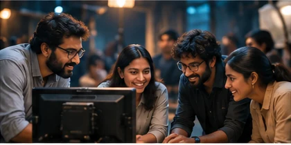
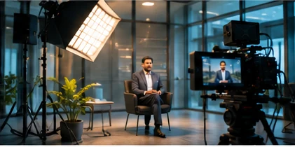
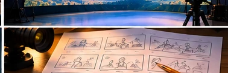

Concept preview — not final
01
Your People & Culture
Introduce your teams, their values and the environment in which they work.
Show the people, work and purpose behind your organisation.
Your people, work and direction are at the centre of the film.

Concept preview — not finalIntroduce your teams, their values and the environment in which they work.

Concept preview — not finalShow your facilities, expertise, products and how your organisation delivers.
Share your milestones, purpose and where your business is going.
Different businesses. One connected story.
People, operations and infrastructure.
Manufacturing, people and milestones.
A simple view of how the idea becomes a finished film.
What your audience should understand.

Concept preview — not finalStory, script and visual treatment.
Your people and work on film.
Edit, sound and final formats.
Let's find the right way to tell it.
Get in Touch ↗